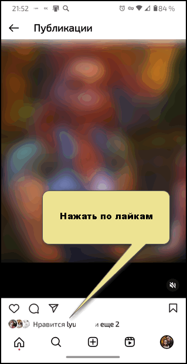
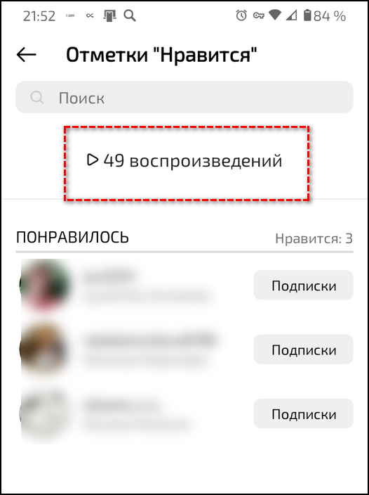

Накрутка просмотров в Инстаграме: Reels, Stories и видео: 22 способа онлайн

Накрутка просмотров в Инстаграме* – простой способ, как продвигать Reels и видео в Рекомендации. Продвижение с помощью клипов актуально в социальной сети и помогает быстро собрать активную аудиторию.
Где смотреть «Просмотры» в Инстаграме*
- с помощью «Статистики». Для владельцев бизнес-аккаунтов и профиля «Автор»;
- отметка «Мне нравится» - Количество воспроизведений.
- откуда пришла аудитория;
- являются ли подписчиками страницы;
- географические данные.
На основании этого можно продвигать профиль по параметрам. То есть, владелец получит активную и заинтересованную аудиторию. Узнать о просмотрах на личном аккаунте:
- Зайти в Инстаграм* – перейти к недавно опубликованному Reels.

- Нажать по лайкам – появится количество воспроизведений.

Еще один раздел, где нужны просмотры – Истории. Посмотреть зрителей своих временных публикаций:
- Перейти в своим недавно опубликованным записям.
- Снизу будет значок в виде «глаза» - нажать по нему.
- Перейти к списку просмотревших.
Зачем накручивать просмотры
Накрутка просмотров Рилс в Инстаграме* – это возможность получить популярность, приложив минимум усилий. Собрать отметки «Мне нравится» и просмотры можно несколькими способами:
- бесплатное продвижение;
- онлайн-сервисы;
- мобильные приложения и расширения в браузер.
Причины по которым накручивают просмотры видео:
- повышение активности в профиле;
- возможность собрать аудиторию;
- продвижение услуг и получение платежеспособной аудитории;
- позиционирование себя, как клипмейкера.
Отдельное внимание к накрутке просмотров Сторис в Инстаграм*. С помощью этой категории можно продвигать услуги, добавляя теги и геопозицию.
Reels в Инстаграме*: узнать о зрителях
Первые 100 просмотров в Инстаграме* необходимы для статистики. С того момента, как количество воспроизведений достигло сотни, автору будет предложено посмотреть тип аудитории. Но если на видеозапись просмотры были сразу накручены, то показатели будут значительно отличаться от естественных и определить целевую аудиторию сложнее. Узнать информацию о целевой аудитории для продвижения:
- посмотреть по комментариям;
- воспользоваться статистикой;
- по лайкам и последним подписавшимся.
С помощью этой информации можно правильно сделать накрутку просмотров Сторис и Рилс в Инстаграме*. И выбирая онлайн-сервис для продвижения, можно использовать эти же данные для выбора потенциальной аудитории.
ТОП-15 сервисов накрутки
Лучшим считается -@V_TOP_soc_bot мой фаворит, но можете сравнить его с подборкой ниже по ценам и количеству услуг.
#1 Smmplace.ru
Сервис накрутки, где можно накрутить просмотры на посты и последние записи. Автор добавляет ссылку на аккаунт и указывает необходимое количество активности. После, на выбранное видео будут добавлены активные пользователи для повышения просмотров. В случае с Reels, автору нужно добавить клип в Ленту.
#2 @Smm_bloger_bot
В Боте ТГ доступны разные варианты накрутки активности: от подписчиков до просмотров Историй, Reels. Чтобы запустить накрутку просмотров, нужно авторизоваться и перейти к созданию соответствующей задачи. Кроме того, зарегистрированный личный кабинет обладает рядом преимуществ, как: выставить промежутки, возможность остановить или повторить задачу.
#3 SMM-bloger.ru
На бирже микрозадач можно накрутить просмотры в Инстаграм* бесплатно, если регулярно выполнять заявки от других пользователей. Сервис направлен на работу с заказчиками и исполнителями, а за выполнение каждой задачи начисляются средства, которые можно потратить на продвижение своей страницы.
#4 @otec_smm_bot
Накрутка просмотров быстро возможна через этот сервис, если выбрать «Мгновенный заказ». Кроме этого есть варианта с регистрацией личного профиля, чтобы отслеживать задачи и создавать новые.
#5 PRSkill
Предлагает простые просмотры и автоматические. Первые будут выполнены живыми пользователями, вторые – ботами. Отдельная услуга – подписка, благодаря которой просмотры будут накручиваться по графику, установленному заказчиком.
#6 SMOService.media
Сайт накрутки просмотров в Инстаграм* предлагает несколько пакетов: от 0.04 рубля до 0.13, которые отличаются по скорости добавления. Пользователь должен зарегистрироваться, чтобы перейти к оформлению услуг. Кроме стандартного заказа можно выбрать систему подписок: это комплексное продвижение, которое включает накрутку лайков, подписчиков, просмотров.
#7 SMMPrime
В сервисе накрутка просмотров на публикации и Reels, находится отдельно от Историй. Цена за Сторис — 15₽ за 1000 привлеченных ботов, публикации и Reels — 0.6₽ за 1000. Чтобы оформить заказ нужно зарегистрироваться и перейти к пакетам услуг для Инстаграма*. Накрутка просмотров происходит по ссылке, которую пользователь должен указать при создании задачи.
#8 TMSmm
Сайт накрутки просмотров Инстаграм* – это TMSmm, где можно оформить разные услуги для продвижения: комментарии, лайки, комментарии. Предлагает первую бесплатную накрутку, чтобы пользователь смог протестировать. Услуги по продвижению Reels, Stories и публикаций – находятся в отдельных разделах, с пакетами от 2 рублей за 100 привлеченных до 39 ₽ за 100 штук.
#9 Qcomment
Биржа, где можно создать задачу под любое количество исполнителей, со своей указанной ценой. Активность будет получена от живых пользователей, но сервис не дает гарантий. Это касается лайков, подписок и комментариев, которые могут быть удалены исполнителем сразу после оплаты.
#10 SMMRoot
Сервис предлагает 6 разных пакетов услуг, с продвижением в рекомендации. Есть крупный тариф в 20 000 действий, по цене – 0,1₽ за одну активность. Можно накрутить просмотры в Инстаграм* без регистрации, если выбрать форму оформления: «Быстрый заказ».
#11 TaskPay
Еще одна биржа микрозадач, где можно заработать и оформить задачу. Владелец профиля может выполнять чужие заданий и полученными средствами оплачивать услуги по продвижению. Нет фильтров и категорий по выполнению задачи в Инстаграме*, но такие заявки появляются в ТОПе заданий быстрее остальных, потому что их минимум.
#12 LikeMania
Предлагает три разные услуги по просмотрам: автоматические, от реальных пользователей, отдельно на Reels и публикации. Заказчик может указать, какой тип аудитории хочет привлечь: «живых» зрителей или ботов. От этого зависит стоимость задания и скорость его выполнения: если выбирать реальных пользователей, то просмотры добавляются медленнее, но есть вероятность что появятся новые подписчики.
#13 BigSmm
Всего один тариф – 7 рублей за 1000 просмотров. Будут добавлены ботами, поэтому ожидать дополнительной активности в аккаунте не стоит. Но накрутка происходит быстро: отследить выполнение задачи можно после регистрации в сервисе.
#14 Piar4you
Два типа накрутки: на публикации и Истории. За 100 просмотров 10-ти Сторис пользователь заплатит 10₽, а за посты - 6₽. Оформить заказ можно без регистрации, перейдя к форме быстрого оформления.
#15 SMMYT
Чтобы получить просмотры Истории или Reels, пользователь должен выбрать один из пакетов услуг. Сервис предлагает от «Эконом» до «Ультима», в котором предложены только активны исполнители с галочкой подтверждения. Есть гарантия по отпискам на 30, 60, 90 и 180 дней, выбор скорости и количества.
7 бесплатных способов увеличить просмотры
С помощью естественного продвижения пользователь получит не только просмотры, но и новую аудиторию, лайки и комментарии. Но далеко не каждый пост становится популярным среди потенциальных фанатов. Как набрать просмотры:
- Использовать в Reels функцию: «Похожие треки». Это мелодии, которые похожи на популярные, но только выходят в ТОП.
- Участвовать в трендах и применять шаблоны.
- Добавлять хештеги даже на Stories. Для этого предусмотрен специальный стикер.
- Для видео в постах – пробовать разные форматы, включая карусель с клипами.
- Делать репосты своих публикаций в Сторис, привлекая внимание подписчиков.
- Просматривать Истории других пользователей, чтобы те взаимно заинтересовались.
- Снимать Reels не более 15 секунд.
Чтобы воспользоваться функцией поиск похожих треков:
- Перейти в раздел Reels – нажать по аудиозаписи, прикрепленной к любому видео.
- Нажать рядом по значку со звездочками – посмотреть рекомендованные треки.
Функция работает на устройствах iOS и новых версиях Android, также необходимо обновление Instagram*.
Лимиты по просмотрам в Инстаграме*
В Инстаграме* нет лимитов на количество просмотров. Но если за пару минут на аккаунте появилось до 100 000 просмотров, хотя страница не популярна и записи ранее не были в «Рекомендациях» - социальная сеть может наложить на аккаунт теневую блокировку. Это значит, что временно посты не будут продвигаться и могут исчезнуть даже из Ленты подписчиков. Чтобы избежать ограничений:
- убедиться, что в выбранном сервисе накрутке есть автоматические перерывы;
- не использовать сразу несколько накруток активности с максимальными значениями;
- после накрутки не совершать активных действий в течение суток.
Задача любого сервиса продвижения – помочь автору быстрее продвинуть контент и стать популярным. Поэтому накрутку нужно комбинировать с естественными способами привлечения аудитории.